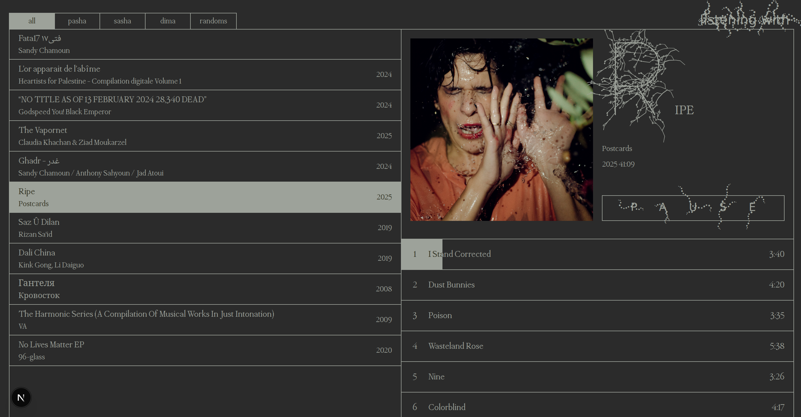
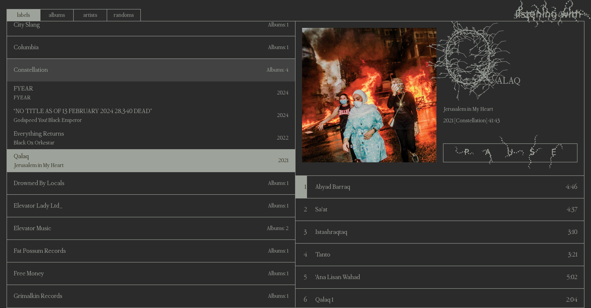
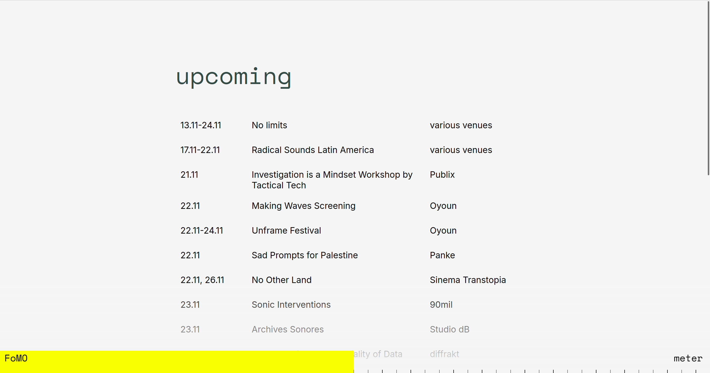
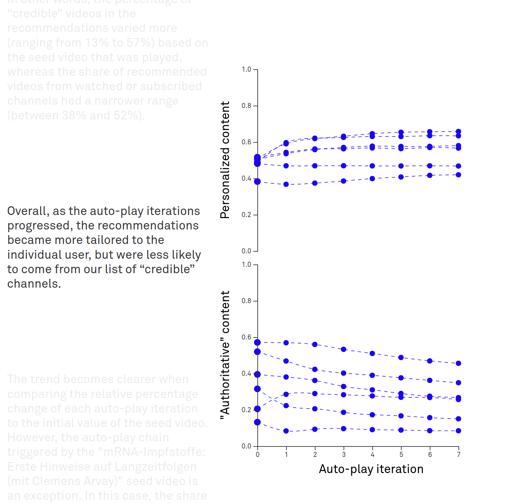
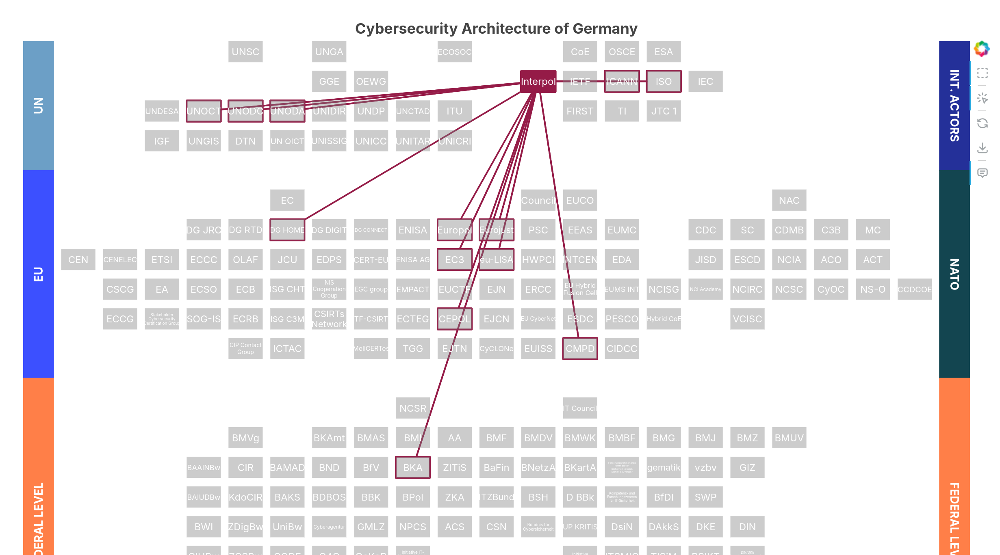
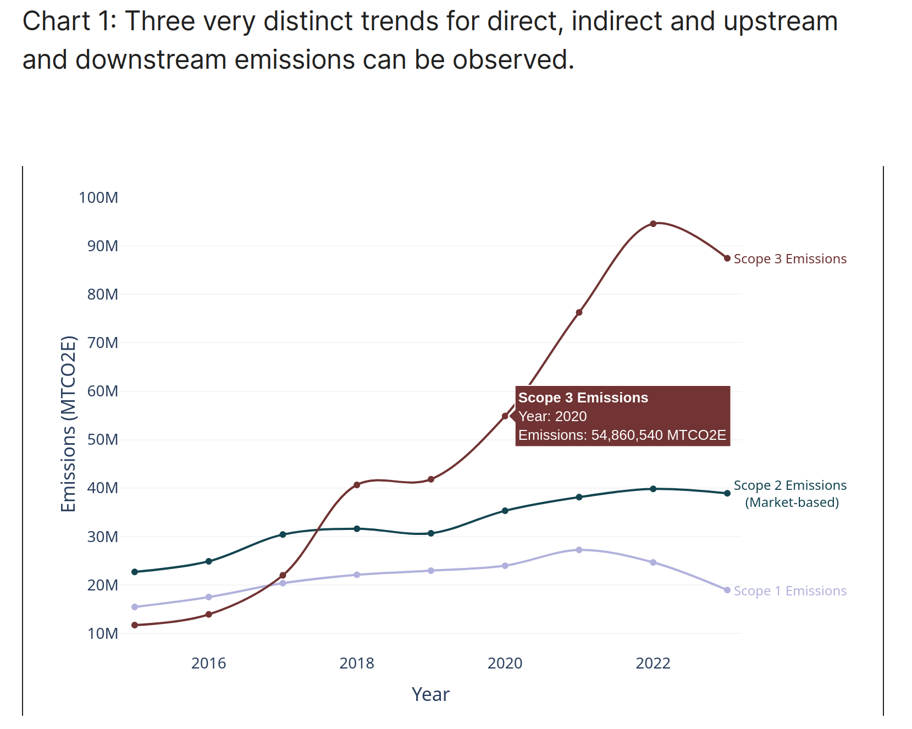
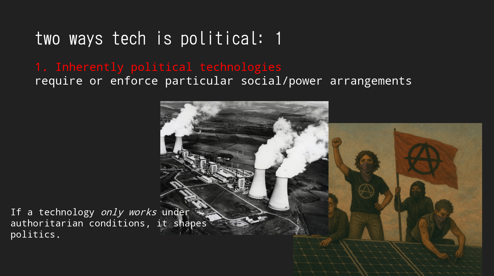
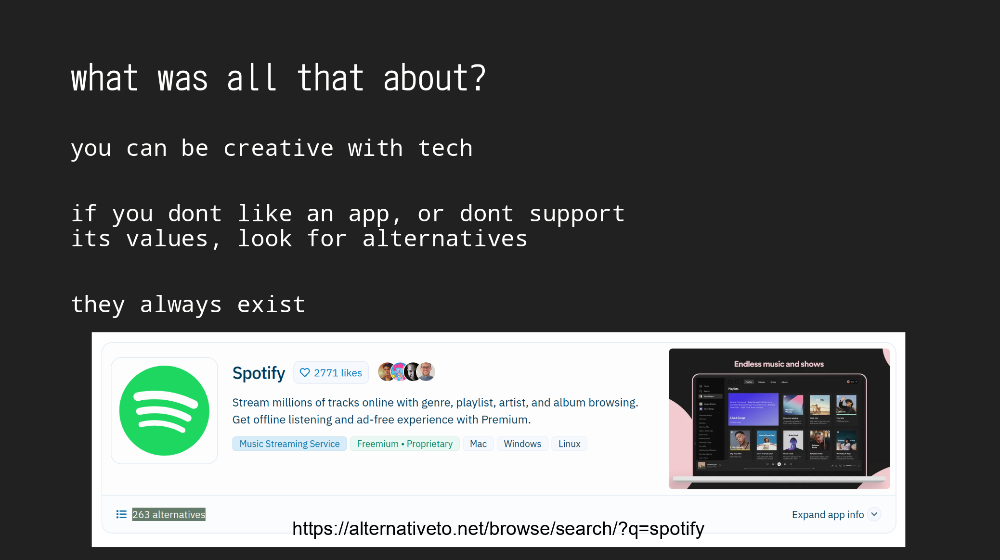
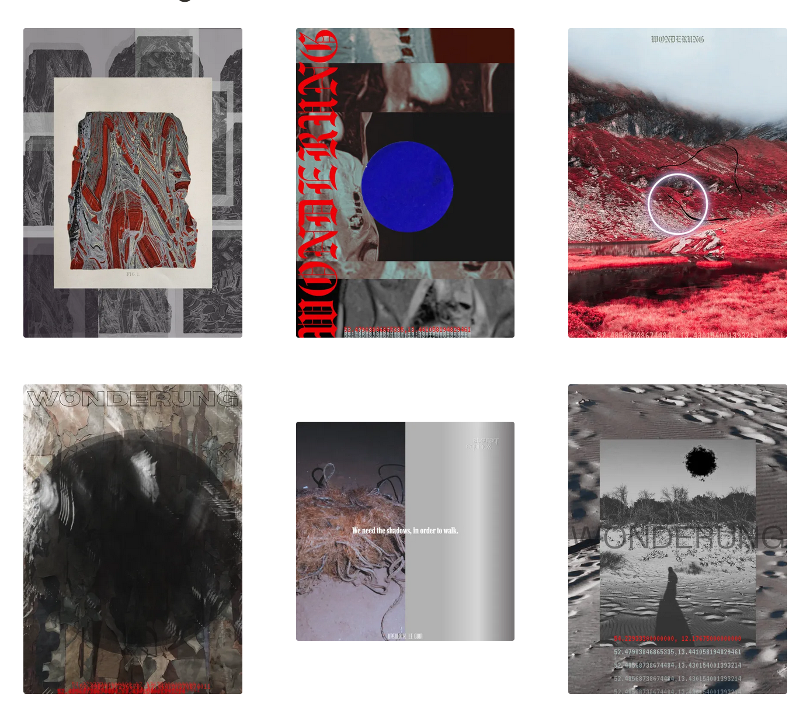

a tiny, homegrown music player for me and my friends. runs on a raspberry pi with user accounts and an external drive mounted into their home folders. gonic serves the music, a simple react + typescript + tailwind frontend handles playback — all behind nginx, wrapped in docker.
reuse, recycle! i built my own local music player by reusing the stack — and much of the code — from the shared version. same tech, but with additional organization by artist and record label, and an improved queue.
a quiet directory of berlin’s cultural life — curated by me, and built with just html, css, and a bit of js. it’s basic, a table, but it works. see it here (currently not updated as i'm working on v2 with a proper database).
a visual exploration of how complexity unfolds inside youtube. i analyzed platform data with python (pandas) and created interactive scrolling visualizations with d3.js. the work maps how features like recommendations, search, and the news intersect — not to simplify, but to make visible what’s often hidden. it’s a call for deeper, more systemic platform audits. see it here.
built a python pipeline to automatically turn excel data into interactive bokeh visualizations for policy research. see it here.
analyzed emissions data with python and pandas, created interactive charts with plotly for exploring industry trends. see it here.
a talk at a festival about why tech is never neutral, spotify’s quiet power, and ideas from langdon winner and donna haraway. a backdrop for my music player experiments. see it here.
 co-organizing wonderung — a self-organized platform for performances, workshops, and discussions in berlin’s urban landscapes. i also created posters for these events, experimenting with textures, type, and minimal color palettes.
